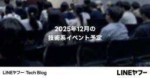
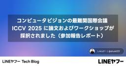

LINEヤフー Tech Blog (LY Corporation Tech Blog
https://techblog.lycorp.co.jp
LINEヤフー株式会社のサービスを支える、技術・開発文化を発信しています。
フィード

2025年12月の技術系イベント予定
LINEヤフー Tech Blog (LY Corporation Tech Blog
LINEヤフー株式会社では、技術に関するイベントや勉強会の主催・協賛などを行っています。最新情報は各リンク先でご確認ください。タイミングによっては、申し込み開始前や既に満席となっていることがあります。...
3日前
AIで"レビュー渋滞"を解消する 〜PRレビュー支援と社内ワークショップでレビュー文化を変えた実践記録〜 2
2
LINEヤフー Tech Blog (LY Corporation Tech Blog
Orchestration Guildメンバーの福山です。普段はYahoo!プレイスというサービスで、フロントエンド開発を担当しています。はじめにOrchestration Guildの紹介をさせてく...
3日前
問い合わせ対応自動化：ノーコード×RAGでつくるAIチャットの裏側 2
LINEヤフー Tech Blog (LY Corporation Tech Blog
こんにちは。DS.INSIGHTのサービスサイトを担当しています、猪目です。「問い合わせ対応を自動化したい！」そんな課題から、私たちのプロジェクトは始まりました。本記事では、ノーコード×RAG (Re...
4日前

コンピュータビジョンの最難関国際会議 ICCV 2025 に論文およびワークショップが採択されました（参加報告レポート）
LINEヤフー Tech Blog (LY Corporation Tech Blog
こんにちは。LINEヤフーで画像生成やデザイン生成の研究開発を担当している 北田 (@shunk031) です。先日 2025 年 10 月 19 日から 23 日までアメリカ・ハワイにて開催された ...
5日前

社内向けChrome拡張ストアの機能追加（インターンレポート）
LINEヤフー Tech Blog (LY Corporation Tech Blog
はじめまして。慶應義塾大学環境情報学部3年の佐藤心紀です。私は、8月18日〜10月8日の8週間、インターンシップとして社内向けサービスのリニューアルに伴う開発に参加いたしました。この記事では、インター...
9日前
モバイルアプリ開発のためのDesign Doc実践ガイド
LINEヤフー Tech Blog (LY Corporation Tech Blog
こんにちは。LINEでAndroidアプリの開発を担当しているMoriです。先日、After DroidKaigi 2025 at LINEヤフー & ZOZOというイベントで、「モバイルアプリ開発の...
17日前
LINEギフトの新規キャンペーン「ギフトくじ」のフロントエンド実装（インターンレポート）
LINEヤフー Tech Blog (LY Corporation Tech Blog
はじめにはじめまして。東京理科大学大学院 創域理工学研究科 情報計算科学専攻 修士1年の佐藤太心です。私は2025年度のサマーインターンシップで、LINEギフトのサービスフロントエンド開発業務に従事し...
17日前
LINEヤフーエンジニアによる Go Conference 2025 参加レポート
LINEヤフー Tech Blog (LY Corporation Tech Blog
こんにちは、Go言語サポートのリードを担当している櫻山です。2025年9月に開催された「Go Conference 2025」にLINEヤフーとして初めてスポンサー協賛し、社内のエンジニア3名で参加し...
17日前
RecSys 2025 参加レポート
LINEヤフー Tech Blog (LY Corporation Tech Blog
はじめにこんにちは、データサイエンティストの栗本です。LINEヤフーでは、最新の知見を業務に取り入れるべく、論文の社内共有会や社外研究会への参加などを積極的に行っています。その一環として、業務に関連す...
24日前
Vue.js の垣根を超えた一大カンファレンスの様子をお届け！ Vue Fes Japan 2025 イベントレポート
LINEヤフー Tech Blog (LY Corporation Tech Blog
こんにちは。@potato4dです。今回は2025年10月25日に開催された Vue Fes Japan 2025 の参加・協賛レポートをお届けします。Vue Fes JapanとはVue Fes J...
24日前
「LINEヤフー ABEMA Meetup 〜データサイエンス〜」を開催しました！（イベントレポート）
LINEヤフー Tech Blog (LY Corporation Tech Blog
こんにちは！LINEヤフー 分析ユニット OA Divisionの柳です。10月22日に株式会社AbemaTVとの共催で、データサイエンス関連の事例を共有するイベントを開催しました。本記事では、イベン...
25日前
AI活用の鍵は「組織的な学び」にある：LINEヤフーのOrchestration Development Workshop始動
LINEヤフー Tech Blog (LY Corporation Tech Blog
いま、LINEヤフーで起きている変化LINEヤフーではいま、AIを活用した開発や業務改善が今まで以上のスピードで広がっています。生成AIを用いたコード生成やテスト効率化はもちろん、非生成AIを組み合わ...
1ヶ月前
進化したランサムウェアLockBit 5.0の解析結果
LINEヤフー Tech Blog (LY Corporation Tech Blog
こんにちは。CISO管掌の脅威情報分析対応チームでセキュリティエンジニアとして活動している首浦です。今回は、2025年9月より新規に観測されているLockBit 5.0の解析結果について共有を行います...
1ヶ月前
LINEギフトでのトレースの導入とAPIパフォーマンス改善（インターンレポート）
LINEヤフー Tech Blog (LY Corporation Tech Blog
はじめにはじめまして、東京科学大学情報通信系学部3年の鈴木康太です。2025年8月25日からLINEギフトのSRE（Site Reliability Engineering）チームでインターンに参加し...
1ヶ月前
Milvus：LINE VOOMのリアルタイムレコメンドシステムのための大規模なベクトルDB構築記
LINEヤフー Tech Blog (LY Corporation Tech Blog
こんにちは。LINE VOOMサービスのレコメンドシステムを開発しているMLエンジニアのChang Hyun Lee、Jin Woo Baekです。私たちは、LINE VOOMのリアルタイムレコメンド...
1ヶ月前
Kafka×Decatonで80並列化した通知基盤（インターンレポート）
LINEヤフー Tech Blog (LY Corporation Tech Blog
こんにちは。東京電機大学理工学部情報システムデザイン学系4年の佐藤聖璃です。8月18日から8週間、LINEヤフー株式会社の就業型インターンに参加させていただきました。私はLINEスキマニのサーバーサイ...
1ヶ月前
iOSDC Japan 2025に参加＆ブース出展しました！
LINEヤフー Tech Blog (LY Corporation Tech Blog
こんにちは、iOSエンジニアのyamakenです。2025年9月19日（金）から21日（日）の3日間にわたり開催されたiOSDC Japan 2025に、LINEヤフー株式会社はプラチナスポンサーとし...
1ヶ月前
2025年11月の技術系イベント予定
LINEヤフー Tech Blog (LY Corporation Tech Blog
LINEヤフー株式会社では、技術に関するイベントや勉強会の主催・協賛などを行っています。最新情報は各リンク先でご確認ください。タイミングによっては、申し込み開始前や既に満席となっていることがあります。...
1ヶ月前
Creators Vision vol.2 「生成AI時代における『私たち』の働き方」開催レポート
LINEヤフー Tech Blog (LY Corporation Tech Blog
こんにちは！ 社内横断でフロントエンド開発や、フロントエンド開発に関するイベントの運営をしている板井 俊樹（@itatchi3_）です。先日「Creators Vision vol.2 — 生成AI時...
1ヶ月前
社内リポジトリにおけるGitHub Actionsの脆弱性レビュー（インターンレポート）
LINEヤフー Tech Blog (LY Corporation Tech Blog
早稲田大学基幹理工学研究科 修士1年の斧田洋人です。このたび、LINEヤフーのインターンシップにセキュリティエンジニアとして参加し、1か月間就業しました。このブログでは、インターン中に取り組んだ内容を...
1ヶ月前
セキュリティプラットフォームのインターン体験記（インターンレポート）
LINEヤフー Tech Blog (LY Corporation Tech Blog
こんにちは。LINEヤフーのセキュリティプラットフォーム関連の開発を行っている矢島です。LINEヤフーのセキュリティプラットフォーム部門では、インターンを実施しています。今年度は6名の方に参加いただき...
1ヶ月前
プライベートクラウドにおけるService Mesh as a ServiceのCircuit Breaker機能開発（インターンレポート）
LINEヤフー Tech Blog (LY Corporation Tech Blog
こんにちは。大阪大学情報科学研究科修士1年の石森大路です。私はサービスインフラグループCloud Infrastructure本部のインターン生として、プライベートクラウドで提供しているService...
2ヶ月前
AIコードレビュー企画によるブース運営（DroidKaigi 2025）
LINEヤフー Tech Blog (LY Corporation Tech Blog
2025年9月10日（水）〜9月12日（金）の3日間にわたって開催されたDroidKaigi 2025に、LINEヤフー株式会社はゴールドスポンサーとして参加しました。イベント期間中は、たくさんの方に...
2ヶ月前
AthenzエンジニアはなぜKubestronautに挑戦したのか？
LINEヤフー Tech Blog (LY Corporation Tech Blog
こんにちは。Security Platform Engineerをしている金 廷祐（Kim, Jeongwoo）です。私は社内のプライベートクラウド環境で、アクセス制御の中核を担うオープンソースプロジ...
2ヶ月前
AIで進める技術的負債の返済 ― 「いつかやる」を「今できる」に ―
LINEヤフー Tech Blog (LY Corporation Tech Blog
こんにちは。Yahoo!フリマでバックエンド開発を担当している高木です。ソフトウェア開発において避けられない「技術的負債」。「いつかやる」と後回しにしているうちに積み重なり、気づいたら大きな負担になっ...
2ヶ月前
LINEのアプリ開発を支えるコードオーナー管理・評価編 〜 PRのコードオーナー不足を90％削減！
LINEヤフー Tech Blog (LY Corporation Tech Blog
はじめにこんにちは、iOSアプリエンジニアの羽柴です。本記事では、プルリクエストにおけるコードオーナー不足を防ぐために導入したGitHub Actionsの効果測定を行った話を紹介します。コードオーナ...
2ヶ月前
LINEヤフーエンジニアによるKubeCon + CloudNativeCon Japan 2025参加レポート
LINEヤフー Tech Blog (LY Corporation Tech Blog
はじめにこんにちは。プライベートクラウドの開発運用およびOSPO（Open Source Program Office）を兼任している早川です。KubeCon + CloudNativeCon（以下、...
2ヶ月前
2025年10月の技術系イベント予定
LINEヤフー Tech Blog (LY Corporation Tech Blog
LINEヤフー株式会社では、技術に関するイベントや勉強会の主催・協賛などを行っています。最新情報は各リンク先でご確認ください。タイミングによっては、申し込み開始前や既に満席となっていることがあります。...
2ヶ月前
ML Tech Talk #1 を開催しました！（イベントレポート）
LINEヤフー Tech Blog (LY Corporation Tech Blog
こんにちは！ LINEヤフー Developer Relations の井上雄飛です。9月8日に「ML Tech Talk #1」というイベントを開催しました。このイベントは、LINEヤフーが取り組む...
2ヶ月前
Claude Codeで体感するAIペアプログラミング（生成AI活用ワークショップ開催レポート）
LINEヤフー Tech Blog (LY Corporation Tech Blog
2025年8月19日に生成AI活用ワークショップを社内で開催したのでレポートします。ワークショップの目的と進行方式今回のワークショップの目的は、特定の機能を習得するにとどまらず、メンバー全体が生成AI...
2ヶ月前
エンジニアとデザイナーのアウトプットを支える舞台裏（Tech Week 2025 開催後記）
LINEヤフー Tech Blog (LY Corporation Tech Blog
こんにちは！Tech Week 2025の全体を統括した、Developer Relations（DevRel）の善積です。2025年6月30日から7月4日にかけて開催された Tech Week 20...
3ヶ月前
LINEヤフーのAI技術の現在、Tech-Verse 2025参加レポート
LINEヤフー Tech Blog (LY Corporation Tech Blog
こんにちは。LINE PlusのLINE AI LABでLLMエージェント関連サービスの開発を担当しているSumin Shinです。私は、7月に東京で開催されたTech-Verse 2025に、現地を...
3ヶ月前
iOSDC Japan 2025 特別企画 「AI時代、iOSアプリエンジニアがこれから生き残るには」
LINEヤフー Tech Blog (LY Corporation Tech Blog
2025年9月19日（金）から21日（日）にかけて開催される iOSDC Japan 2025 にて、LINEヤフー株式会社はプラチナスポンサーを務めます。このたび、iOSDC Japan 2025の...
3ヶ月前
Vespaを活用したYahoo!フリマのベクトル検索 —— 類似画像で広がる商品探索
LINEヤフー Tech Blog (LY Corporation Tech Blog
こんにちは。LINEヤフー株式会社の鈴木です。業務ではYahoo!オークションとYahoo!フリマの検索改善を担当しています。最近、Yahoo!フリマで「見た目が似ている商品を探せる機能」をリリースし...
3ヶ月前
iOSDC Japan 2025 登壇内容と extension DC 開催のお知らせ
LINEヤフー Tech Blog (LY Corporation Tech Blog
こんにちは。Developer Relations部のaikawaです。2025年9月19日（金）から21日（日）にかけて開催されるiOSDC Japan 2025にて、LINEヤフー株式会社はプラチ...
3ヶ月前
コード品質向上のテクニック：第72回 概念的循環依存 鶏が先か、卵が先か？
LINEヤフー Tech Blog (LY Corporation Tech Blog
こんにちは。コミュニケーションアプリ「LINE」のモバイルクライアントを開発しているTuan Chauです。この記事は、"Review Committee Report" 共有の連載第 72 回です。...
3ヶ月前
LINEヤフーのコンピュータビジョン・マルチモーダル分野の研究内容紹介（MIRU2025 レポート）
LINEヤフー Tech Blog (LY Corporation Tech Blog
こんにちは。LINEヤフーでVision&Language基盤モデル及び、AIモデルAPIの開発を担当している向山です。先日2025年7月29日から8月1日まで京都にて国内最大級の画像分野の学会、第2...
3ヶ月前
リアルタイム音声対話AI開発の取り組み紹介（Tech-Verse 2025）
LINEヤフー Tech Blog (LY Corporation Tech Blog
はじめにこんにちは、LINEヤフーで音声AIの研究開発を担当している三宅純平と木下泰輝です。私たちの所属組織「Speech and Acoustic AI部」では、音声認識（ASR）や音声合成（TTS...
3ヶ月前
君、ハッカーにならないか？Hack Day 2025に行ってきました！
LINEヤフー Tech Blog (LY Corporation Tech Blog
こんにちは。LINE PlusのRedisチームのJeonghoon Kimです。私は、7月2日から4日まで3日間にわたって開催されました社内ハッカソン「Hack Day 2025」に参加しました。H...
3ヶ月前
巨大サイズデータ処理に対して省メモリで立ち向かう
LINEヤフー Tech Blog (LY Corporation Tech Blog
こんにちは。検索連動型ショッピング広告のレポートシステムを担当している眞井です。レポートシステムでは、広告主が広告の成果の可視化や分析を行うためのレポートを作成する機能を提供しています。作成するレポー...
3ヶ月前
生成AIの利活用事例に関するLT会を開催しました！
LINEヤフー Tech Blog (LY Corporation Tech Blog
8月13日に紀尾井町オフィスにて、生成AI利活用事例に関するLT会「Hacking Fest 2025 Summer」を開催しました。当日はオフライン・オンライン合わせて多くの方にご参加いただき、20...
3ヶ月前
AIで生成された画像をどのように評価するのか？（インペインティング適用編）
LINEヤフー Tech Blog (LY Corporation Tech Blog
はじめにこんにちは。私たちAMD（Applied ML Dev）チームでは、生成AIを含むさまざまなAI/MLモデルを開発し、サービスに適用しています。先日公開したAIで生成された画像をどのように評価...
3ヶ月前
プレミアムバックアップがE2EEを保つためのしくみ
LINEヤフー Tech Blog (LY Corporation Tech Blog
こんにちは。LINEアプリ開発を担当しているひめしです。本記事では、今年リリースされたLYPプレミアム会員特典である「プレミアムバックアップ」において、E2EE (End to End Encrypt...
3ヶ月前
AIで生成された画像をどのように評価するのか？（ブラックボックス最適化適用編）
LINEヤフー Tech Blog (LY Corporation Tech Blog
「良い画像」を生成するのは簡単ではないLINEヤフーには、特定の比率で最小限のディテールを維持しながら人体やオブジェクトを定義する画像スタイルが存在します（参考）。私たちのチームでは、生成AIを利用し...
3ヶ月前
2025年9月の技術系イベント予定
LINEヤフー Tech Blog (LY Corporation Tech Blog
LINEヤフー株式会社では、技術に関するイベントや勉強会の主催・協賛などを行っています。最新情報は各リンク先でご確認ください。タイミングによっては、申し込み開始前や既に満席となっていることがあります。...
3ヶ月前
デルタ法を使った統計的仮説検定を行うRパッケージ deltatest の紹介
LINEヤフー Tech Blog (LY Corporation Tech Blog
こんにちは。LINEヤフー株式会社の牧山です。私は現在データ分析の部署で働いており、自社サービスのデータ分析をしたり、自分の体重データを眺めては「減らないな……」と思ったりしています。このような本来の...
3ヶ月前
AIで生成された画像をどのように評価するのか？（基本編）
LINEヤフー Tech Blog (LY Corporation Tech Blog
はじめにここ数年、生成モデルは人工知能の分野で革新的なツールとして浮上し、研究者や業界のリーダーから大きな注目を集めています。生成モデルは、ディープラーニング技術の進歩に基づき、高品質の画像や動画など...
4ヶ月前
コード品質向上のテクニック：第71回 Mutexの競合に注意
LINEヤフー Tech Blog (LY Corporation Tech Blog
こんにちは。コミュニケーションアプリ「LINE」のモバイルクライアントを開発している大石です。この記事は、"Review Committee Report" 共有の連載第 71 回です。LINEヤフー...
4ヶ月前
StaticEmbeddingを用いた高速な検索クエリ埋め込み
LINEヤフー Tech Blog (LY Corporation Tech Blog
こんにちは。LINEヤフー株式会社で自然言語処理の研究開発をしている平子です。本記事では、クエリ理解タスクの中核技術であるクエリ埋め込みにおいて、軽量モデルであるStaticEmbeddingを採用し...
4ヶ月前
コード品質向上のテクニック：第70回 制約は（データ）構造の母
LINEヤフー Tech Blog (LY Corporation Tech Blog
こんにちは。コミュニケーションアプリ「LINE」のモバイルクライアント開発を担当している高瀬亮 (loloicci) です。この記事は、"Review Committee Report" 共有の連載第...
4ヶ月前